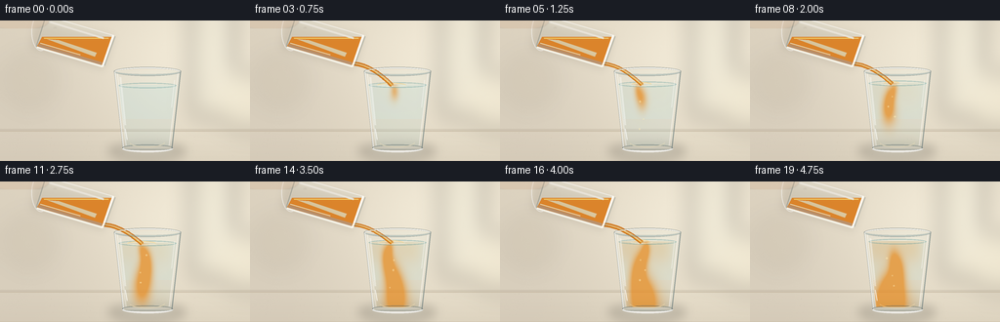
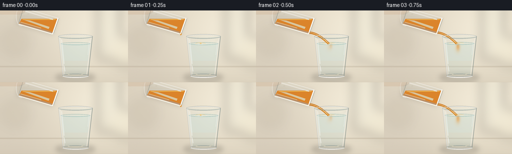

CODING AGENTS AS PIXEL WORLD MODELS
traex/GPT-5.6-Sol · phygen_139
点击播放 · 原生 RGB 像素
逐轮保存的候选
回放视频、检查图与代码变化。
每份候选均可单独播放。实际图片检查记录在下方工具轨迹中。
候选 01播放与检查图
点击播放 · 原生 RGB 像素


展开代码变化
--- 上一保存版本
+++ 本次保存版本
@@ -0,0 +1,253 @@
+from pathlib import Path
+import math
+import numpy as np
+from PIL import Image, ImageDraw, ImageFilter
+import artifact_io
+
+# Deterministic, supersampled procedural animation.
+W, H, N, S = 256, 144, 20, 4
+SW, SH = W*S, H*S
+rng = np.random.default_rng(139)
+
+def P(seq):
+ return [(int(round(x*S)), int(round(y*S))) for x, y in seq]
+
+def box(b):
+ return tuple(int(round(v*S)) for v in b)
+
+def rgba_layer():
+ return Image.new("RGBA", (SW, SH), (0, 0, 0, 0))
+
+def composite(base, layer):
+ return Image.alpha_composite(base, layer)
+
+def bezier(a, b, c, n=36):
+ out=[]
+ for u in np.linspace(0, 1, n):
+ v=1-u
+ out.append((v*v*a[0]+2*v*u*b[0]+u*u*c[0],
+ v*v*a[1]+2*v*u*b[1]+u*u*c[1]))
+ return out
+
+def make_background(frame):
+ # Warm daylight kitchen background: smooth cream wall, soft window glow,
+ # and a stone counter. Small changes in illumination prevent a sterile still.
+ yy, xx = np.mgrid[0:SH, 0:SW]
+ x = xx / S; y = yy / S
+ glow = np.exp(-((x-202)**2/(2*78**2) + (y-38)**2/(2*55**2)))
+ shade = np.exp(-((x-18)**2/(2*70**2) + (y-92)**2/(2*80**2)))
+ grain = rng.normal(0, 0.65, (SH, SW))
+ r = 224 + 18*glow - 8*shade + grain
+ g = 214 + 20*glow - 8*shade + grain
+ b = 194 + 21*glow - 6*shade + grain
+ arr = np.dstack([r,g,b]).clip(0,255).astype(np.uint8)
+ im = Image.fromarray(arr, "RGB").convert("RGBA")
+
+ # Defocused vertical shapes suggest a bright domestic interior without clutter.
+ blur = rgba_layer(); d = ImageDraw.Draw(blur, "RGBA")
+ d.rounded_rectangle(box((196,-12,239,99)), radius=8*S, fill=(246,246,228,82))
+ d.rectangle(box((211,-5,216,101)), fill=(194,185,158,26))
+ d.ellipse(box((6,35,55,88)), fill=(157,140,104,18))
+ d.ellipse(box((223,53,279,113)), fill=(255,250,221,58))
+ blur = blur.filter(ImageFilter.GaussianBlur(11*S))
+ im = composite(im, blur)
+
+ # Counter plane and a soft horizon.
+ lay=rgba_layer(); d=ImageDraw.Draw(lay, "RGBA")
+ d.rectangle(box((0,111,256,144)), fill=(195,181,157,255))
+ d.rectangle(box((0,111,256,113)), fill=(153,139,118,45))
+ # Fine counter gradient bands and understated stone specks.
+ for y0 in range(114,144):
+ a=int(11*(y0-114)/30)
+ d.line(P([(0,y0),(256,y0)]), fill=(91,77,61,a), width=S)
+ for k in range(35):
+ sx=(k*73+19)%256; sy=115+(k*17)%28
+ d.ellipse(box((sx,sy,sx+.5,sy+.35)), fill=(96,87,74,22))
+ im=composite(im,lay)
+ return im
+
+def draw_receiving_glass(im, frame):
+ poured = max(0, min(frame-1, 16))
+ prog = poured/16.0
+ surface_y = 66.0 - 5.1*prog
+
+ # Contact shadow/reflected warm light beneath the glass.
+ sh=rgba_layer(); sd=ImageDraw.Draw(sh,"RGBA")
+ sd.ellipse(box((111,126,190,142)), fill=(72,62,49,67))
+ sd.ellipse(box((121,128,180,137)), fill=(85,103,105,38))
+ sh=sh.filter(ImageFilter.GaussianBlur(5*S))
+ im=composite(im, sh)
+
+ # Back glass body: faint refractive tint and outline.
+ back=rgba_layer(); d=ImageDraw.Draw(back,"RGBA")
+ outer=[(117,51),(185,51),(176,132),(126,132)]
+ d.polygon(P(outer), fill=(210,237,238,25))
+ d.line(P([(117,53),(126,132),(176,132),(185,53)]), fill=(90,113,116,85), width=1*S, joint="curve")
+ d.line(P([(120,54),(129,128)]), fill=(255,255,250,120), width=1*S)
+ d.line(P([(182,54),(173,128)]), fill=(255,255,255,105), width=1*S)
+ im=composite(im,back)
+
+ # Liquid cavity mask (slightly tapering with glass).
+ mask=Image.new("L",(SW,SH),0); md=ImageDraw.Draw(mask)
+ md.polygon(P([(121.5,surface_y),(180.5,surface_y),(172.5,128.5),(129,128.5)]), fill=255)
+ # Pale water body, with cool lower refraction.
+ water=rgba_layer(); wd=ImageDraw.Draw(water,"RGBA")
+ wd.rectangle(box((118,surface_y,183,130)), fill=(184,220,220,67))
+ wd.rectangle(box((118,101,183,130)), fill=(122,181,186,22))
+ water.putalpha(Image.composite(water.getchannel("A"), Image.new("L",(SW,SH),0), mask))
+ im=composite(im,water)
+
+ # Juice concentration field: parcels descend, curl, spread, and slowly mix.
+ yy,xx=np.mgrid[0:SH,0:SW]
+ x=xx/S; y=yy/S
+ c=np.zeros((SH,SW),np.float32)
+ for q in range(2, min(frame,16)+1):
+ age=frame-q
+ cy=min(124.0, surface_y+4.0+4.2*age+0.10*age*age)
+ cx=145.0 + 4.8*math.sin(0.88*q+0.46*age) + 0.10*age
+ sx=2.2+0.42*age; sy=5.0+0.78*age
+ parcel=np.exp(-0.5*((x-cx)/sx)**2-0.5*((y-cy)/sy)**2)
+ # Split lower edges into soft curling lobes.
+ curl=np.exp(-0.5*((x-(cx-5*math.sin(age*.45+q)))/(sx*.85+1))**2
+ -0.5*((y-(cy+4.5))/(sy*.75+1))**2)
+ c += .34*parcel + .10*curl
+ # Persistent cloudy amber near the top and a gentle, physically plausible
+ # accumulation at the bottom after the descending plume arrives.
+ if prog>0:
+ topfog=np.exp(-((y-(surface_y+7))/18)**2) * np.exp(-((x-147)/29)**6)
+ bottom=np.exp(-((y-124)/15)**2) * np.exp(-((x-150)/26)**6)
+ c += (0.10+0.17*prog)*prog*topfog
+ c += 0.24*max(0,(prog-.28))**1.15*bottom
+ c += 0.055*prog
+ c=np.clip(c,0,1)
+ mask_a=np.asarray(mask,dtype=np.float32)/255
+ alpha=(c*188*mask_a).clip(0,190).astype(np.uint8)
+ amber=np.zeros((SH,SW,4),dtype=np.uint8)
+ amber[...,0]=232; amber[...,1]=139; amber[...,2]=31; amber[...,3]=alpha
+ im=composite(im,Image.fromarray(amber,"RGBA"))
+
+ # Bright liquid surface and ripples centered under the stream.
+ surf=rgba_layer(); d=ImageDraw.Draw(surf,"RGBA")
+ d.ellipse(box((121.5,surface_y-2.2,180.5,surface_y+3.3)), fill=(233,238,218,27), outline=(104,159,159,112), width=S)
+ if 1 <= frame <= 18:
+ pulse=(frame%4)/4
+ rw=8+9*pulse
+ d.arc(box((145-rw,surface_y-1.7,145+rw,surface_y+3.3)), 184, 354, fill=(251,211,126,150), width=S)
+ d.arc(box((138-rw*.55,surface_y-.8,152+rw*.55,surface_y+2.5)), 5, 174, fill=(255,255,239,100), width=S)
+ d.ellipse(box((143.5,surface_y-1.2,147,surface_y+1.2)), fill=(250,173,49,120))
+ # tiny entrained bubbles beneath impact
+ if frame>=4:
+ for j in range(3):
+ age=(frame*1.7+j*3.2)%12
+ bx=145+math.sin(j*2.1+frame*.35)*(2+j*1.5)
+ by=surface_y+9+age*3.2
+ if by<126:
+ rr=.65+.15*j
+ d.ellipse(box((bx-rr,by-rr,bx+rr,by+rr)), outline=(255,239,185,120), width=S)
+ im=composite(im,surf)
+ return im, surface_y
+
+def draw_stream(im, frame, surface_y):
+ layer=rgba_layer(); d=ImageDraw.Draw(layer,"RGBA")
+ start=(105.0,44.2)
+ # Continuous pour, then a narrowing tail and detached final drops.
+ if 2 <= frame <= 16:
+ wob=.65*math.sin(frame*.75)
+ path=bezier(start,(123+wob,44.5),(145.2+wob*.25,surface_y+1),45)
+ width=(4.2 + .35*math.sin(frame*.8))*S
+ d.line(P(path),fill=(207,112,18,235),width=max(S,int(width)),joint="curve")
+ d.line(P([(x-.35,y-.25) for x,y in path]),fill=(255,204,78,185),width=max(1,int(1.45*S)),joint="curve")
+ d.line(P([(x+1.2,y) for x,y in path]),fill=(147,72,12,70),width=max(1,int(.8*S)),joint="curve")
+ elif frame==1:
+ # First bead leaves the lip.
+ d.ellipse(box((103.5,43.0,107.2,49.5)),fill=(226,139,29,230))
+ elif frame==17:
+ path=bezier(start,(124,46),(145,surface_y-5),30)
+ # broken filament
+ d.line(P(path[:22]),fill=(220,124,20,225),width=3*S,joint="curve")
+ d.ellipse(box((141,surface_y-7,146,surface_y-1)),fill=(224,128,22,230))
+ elif frame==18:
+ d.ellipse(box((120,47,124,53)),fill=(227,135,24,225))
+ d.ellipse(box((140,surface_y-9,144.4,surface_y-3)),fill=(230,141,26,230))
+ im=composite(im,layer)
+ return im
+
+def draw_glass_front(im, surface_y):
+ lay=rgba_layer(); d=ImageDraw.Draw(lay,"RGBA")
+ # Front rim overlays the stream at the opening; layered strokes read as clear glass.
+ d.ellipse(box((116.5,47.5,185.5,56.8)), outline=(75,95,100,105), width=2*S)
+ d.arc(box((117.5,48.2,184.5,55.9)), 180, 360, fill=(255,255,252,210), width=S)
+ d.arc(box((118,49.0,184,56.0)), 3, 177, fill=(141,174,177,105), width=S)
+ d.line(P([(117.5,52.5),(126.2,131)]),fill=(255,255,255,165),width=S)
+ d.line(P([(184.5,52.5),(175.7,131)]),fill=(80,104,108,95),width=S)
+ d.arc(box((125,127.5,177,135)),0,180,fill=(255,255,255,176),width=2*S)
+ d.arc(box((125,127.0,177,134)),180,360,fill=(81,101,103,112),width=S)
+ # Long specular highlights and broken caustics.
+ d.line(P([(123,58),(128,107)]),fill=(255,255,255,92),width=2*S)
+ d.line(P([(128,111),(130,122)]),fill=(255,255,255,165),width=S)
+ d.line(P([(178.5,61),(175.5,89)]),fill=(255,255,255,90),width=S)
+ d.arc(box((132,119,169,130)),8,164,fill=(255,232,179,77),width=S)
+ return composite(im,lay)
+
+def draw_pouring_glass(im, frame):
+ # The tilted tumbler is held just outside the crop. Its amber contents remain
+ # level under gravity while the low rim feeds the stream.
+ shadow=rgba_layer(); sd=ImageDraw.Draw(shadow,"RGBA")
+ sd.polygon(P([(36,4),(116,16),(106,50),(32,28)]),fill=(70,57,37,26))
+ shadow=shadow.filter(ImageFilter.GaussianBlur(4*S)); im=composite(im,shadow)
+
+ body=rgba_layer(); d=ImageDraw.Draw(body,"RGBA")
+ vessel=[(37,27),(105,47),(116,15),(47,-6)]
+ d.polygon(P(vessel),fill=(226,239,231,24))
+ # Juice occupies the gravity-low part with a horizontal free surface.
+ juice=[(43,16.7),(115.3,16.7),(105.2,45.5),(37.8,26.5)]
+ d.polygon(P(juice),fill=(220,120,19,218))
+ # golden depth near lower wall
+ d.line(P([(39,25),(104,44)]),fill=(151,69,8,110),width=3*S)
+ d.line(P([(45,18),(111,18)]),fill=(255,204,67,180),width=S)
+ # warm internal highlight
+ d.polygon(P([(48,19),(60,20),(99,33),(97,37)]),fill=(255,190,48,42))
+ # clear glass edges and base
+ d.line(P([(37,27),(105,47)]),fill=(255,255,246,190),width=2*S)
+ d.line(P([(47,-5),(116,15)]),fill=(255,255,255,145),width=S)
+ d.line(P([(37,27),(47,-5)]),fill=(95,112,109,95),width=S)
+ d.line(P([(105,47),(116,15)]),fill=(79,93,92,120),width=2*S)
+ # mouth: oblique double rim (line across endpoints approximates tilted ellipse)
+ d.line(P([(105,47),(116,15)]),fill=(255,255,250,225),width=2*S)
+ d.line(P([(107,46),(118,16)]),fill=(103,119,116,92),width=S)
+ d.arc(box((32,-8,52,31)),75,275,fill=(255,255,255,120),width=S)
+ # specular streak along top face
+ d.line(P([(50,1),(106,18)]),fill=(255,255,255,105),width=2*S)
+ d.line(P([(41,23),(82,35)]),fill=(255,239,194,100),width=S)
+ im=composite(im,body)
+
+ # A subtle thumb/fingertip at the cropped holding end establishes agency.
+ hand=rgba_layer(); hd=ImageDraw.Draw(hand,"RGBA")
+ hd.ellipse(box((-10,-12,51,10)),fill=(202,153,116,115))
+ hd.arc(box((16,-5,58,16)),10,155,fill=(246,204,167,96),width=2*S)
+ hand=hand.filter(ImageFilter.GaussianBlur(.7*S))
+ # Place hand behind illusionistically by low opacity; top crop hides most of it.
+ # It is composited last only where vessel does not dominate.
+ # Avoid covering the principal amber contents.
+ # (masking to y<8)
+ hm=Image.new("L",(SW,SH),0); ImageDraw.Draw(hm).rectangle(box((0,0,58,8)),fill=110)
+ hand.putalpha(Image.composite(hand.getchannel('A'),Image.new('L',(SW,SH),0),hm))
+ return composite(im,hand)
+
+def render_frame(i):
+ im=make_background(i)
+ im,surface_y=draw_receiving_glass(im,i)
+ im=draw_stream(im,i,surface_y)
+ im=draw_glass_front(im,surface_y)
+ im=draw_pouring_glass(im,i)
+ # Downsample gives smooth glass rims and fluid edges.
+ im=im.convert("RGB").resize((W,H),Image.Resampling.LANCZOS)
+ return np.asarray(im,dtype=np.uint8)
+
+def main():
+ frames=np.stack([render_frame(i) for i in range(N)],axis=0)
+ artifact_io.save(frames,Path(__file__).resolve().parent)
+ print("saved",frames.shape,frames.dtype)
+
+if __name__ == "__main__":
+ main()
可观测工具轨迹
实际执行的命令与返回图片。
命令 1exit 0
/bin/bash -lc "cat prompt.txt && printf '\\n--- GENERATION_RULES ---\\n' && cat GENERATION_RULES.md && printf '\\n--- TASK_SPEC ---\\n' && cat task_spec.json"
命令 2exit 1
/bin/bash -lc "find . -maxdepth 2 -type f -printf '%p\\n' | sort && printf '\\n--- binaries ---\\n' && command -v ffmpeg && command -v python3 && python3 - <<'PY' mods=['PIL','numpy','cv2','imageio','moviepy','scipy'] for m in mods: try: x=__import__(m); print(m, getattr(x,'__version__','ok')) except Exception as e: print(m, 'MISSING', e) PY"
命令 3exit 0
/bin/bash -lc 'cat artifact_io.py'
命令 4exit 0
/bin/bash -lc "for x in python3 python ffmpeg convert magick; do printf '%s: ' \""'$x"; command -v "$x" || true; done; python3 - <<'"'PY' mods=['PIL','numpy','cv2','imageio','moviepy','scipy'] for m in mods: try: x=__import__(m); print(m, getattr(x,'__version__','ok')) except Exception as e: print(m, 'MISSING', type(e).__name__, e) PY"
命令 5exit 0
/bin/bash -lc "cat > generate.py <<'PY'
from pathlib import Path
import math
import numpy as np
from PIL import Image, ImageDraw, ImageFilter
import artifact_io
# Deterministic, supersampled procedural animation.
W, H, N, S = 256, 144, 20, 4
SW, SH = W*S, H*S
rng = np.random.default_rng(139)
def P(seq):
return [(int(round(x*S)), int(round(y*S))) for x, y in seq]
def box(b):
return tuple(int(round(v*S)) for v in b)
def rgba_layer():
return Image.new(\"RGBA\", (SW, SH), (0, 0, 0, 0))
def composite(base, layer):
return Image.alpha_composite(base, layer)
def bezier(a, b, c, n=36):
out=[]
for u in np.linspace(0, 1, n):
v=1-u
out.append((v*v*a[0]+2*v*u*b[0]+u*u*c[0],
v*v*a[1]+2*v*u*b[1]+u*u*c[1]))
return out
def make_background(frame):
# Warm daylight kitchen background: smooth cream wall, soft window glow,
# and a stone counter. Small changes in illumination prevent a sterile still.
yy, xx = np.mgrid[0:SH, 0:SW]
x = xx / S; y = yy / S
glow = np.exp(-((x-202)**2/(2*78**2) + (y-38)**2/(2*55**2)))
shade = np.exp(-((x-18)**2/(2*70**2) + (y-92)**2/(2*80**2)))
grain = rng.normal(0, 0.65, (SH, SW))
r = 224 + 18*glow - 8*shade + grain
g = 214 + 20*glow - 8*shade + grain
b = 194 + 21*glow - 6*shade + grain
arr = np.dstack([r,g,b]).clip(0,255).astype(np.uint8)
im = Image.fromarray(arr, \"RGB\").convert(\"RGBA\")
# Defocused vertical shapes suggest a bright domestic interior without clutter.
blur = rgba_layer(); d = ImageDraw.Draw(blur, \"RGBA\")
d.rounded_rectangle(box((196,-12,239,99)), radius=8*S, fill=(246,246,228,82))
d.rectangle(box((211,-5,216,101)), fill=(194,185,158,26))
d.ellipse(box((6,35,55,88)), fill=(157,140,104,18))
d.ellipse(box((223,53,279,113)), fill=(255,250,221,58))
blur = blur.filter(ImageFilter.GaussianBlur(11*S))
im = composite(im, blur)
# Counter plane and a soft horizon.
lay=rgba_layer(); d=ImageDraw.Draw(lay, \"RGBA\")
d.rectangle(box((0,111,256,144)), fill=(195,181,157,255))
d.rectangle(box((0,111,256,113)), fill=(153,139,118,45))
# Fine counter gradient bands and understated stone specks.
for y0 in range(114,144):
a=int(11*(y0-114)/30)
d.line(P([(0,y0),(256,y0)]), fill=(91,77,61,a), width=S)
for k in range(35):
sx=(k*73+19)%256; sy=115+(k*17)%28
d.ellipse(box((sx,sy,sx+.5,sy+.35)), fill=(96,87,74,22))
im=composite(im,lay)
return im
def draw_receiving_glass(im, frame):
poured = max(0, min(frame-1, 16))
prog = poured/16.0
surface_y = 66.0 - 5.1*prog
# Contact shadow/reflected warm light beneath the glass.
sh=rgba_layer(); sd=ImageDraw.Draw(sh,\"RGBA\")
sd.ellipse(box((111,126,190,142)), fill=(72,62,49,67))
sd.ellipse(box((121,128,180,137)), fill=(85,103,105,38))
sh=sh.filter(ImageFilter.GaussianBlur(5*S))
im=composite(im, sh)
# Back glass body: faint refractive tint and outline.
back=rgba_layer(); d=ImageDraw.Draw(back,\"RGBA\")
outer=[(117,51),(185,51),(176,132),(126,132)]
d.polygon(P(outer), fill=(210,237,238,25))
d.line(P([(117,53),(126,132),(176,132),(185,53)]), fill=(90,113,116,85), width=1*S, joint=\"curve\")
d.line(P([(120,54),(129,128)]), fill=(255,255,250,120), width=1*S)
d.line(P([(182,54),(173,128)]), fill=(255,255,255,105), width=1*S)
im=composite(im,back)
# Liquid cavity mask (slightly tapering with glass).
mask=Image.new(\"L\",(SW,SH),0); md=ImageDraw.Draw(mask)
md.polygon(P([(121.5,surface_y),(180.5,surface_y),(172.5,128.5),(129,128.5)]), fill=255)
# Pale water body, with cool lower refraction.
water=rgba_layer(); wd=ImageDraw.Draw(water,\"RGBA\")
wd.rectangle(box((118,surface_y,183,130)), fill=(184,220,220,67))
wd.rectangle(box((118,101,183,130)), fill=(122,181,186,22))
water.putalpha(Image.composite(water.getchannel(\"A\"), Image.new(\"L\",(SW,SH),0), mask))
im=composite(im,water)
# Juice concentration field: parcels descend, curl, spread, and slowly mix.
yy,xx=np.mgrid[0:SH,0:SW]
x=xx/S; y=yy/S
c=np.zeros((SH,SW),np.float32)
for q in range(2, min(frame,16)+1):
age=frame-q
cy=min(124.0, surface_y+4.0+4.2*age+0.10*age*age)
cx=145.0 + 4.8*math.sin(0.88*q+0.46*age) + 0.10*age
sx=2.2+0.42*age; sy=5.0+0.78*age
parcel=np.exp(-0.5*((x-cx)/sx)**2-0.5*((y-cy)/sy)**2)
# Split lower edges into soft curling lobes.
curl=np.exp(-0.5*((x-(cx-5*math.sin(age*.45+q)))/(sx*.85+1))**2
-0.5*((y-(cy+4.5))/(sy*.75+1))**2)
c += .34*parcel + .10*curl
# Persistent cloudy amber near the top and a gentle, physically plausible
# accumulation at the bottom after the descending plume arrives.
if prog>0:
topfog=np.exp(-((y-(surface_y+7))/18)**2) * np.exp(-((x-147)/29)**6)
bottom=np.exp(-((y-124)/15)**2) * np.exp(-((x-150)/26)**6)
c += (0.10+0.17*prog)*prog*topfog
c += 0.24*max(0,(prog-.28))**1.15*bottom
c += 0.055*prog
c=np.clip(c,0,1)
mask_a=np.asarray(mask,dtype=np.float32)/255
alpha=(c*188*mask_a).clip(0,190).astype(np.uint8)
amber=np.zeros((SH,SW,4),dtype=np.uint8)
amber[...,0]=232; amber[...,1]=139; amber[...,2]=31; amber[...,3]=alpha
im=composite(im,Image.fromarray(amber,\"RGBA\"))
# Bright liquid surface and ripples centered under the stream.
surf=rgba_layer(); d=ImageDraw.Draw(surf,\"RGBA\")
d.ellipse(box((121.5,surface_y-2.2,180.5,surface_y+3.3)), fill=(233,238,218,27), outline=(104,159,159,112), width=S)
if 1 <= frame <= 18:
pulse=(frame%4)/4
rw=8+9*pulse
d.arc(box((145-rw,surface_y-1.7,145+rw,surface_y+3.3)), 184, 354, fill=(251,211,126,150), width=S)
d.arc(box((138-rw*.55,surface_y-.8,152+rw*.55,surface_y+2.5)), 5, 174, fill=(255,255,239,100), width=S)
d.ellipse(box((143.5,surface_y-1.2,147,surface_y+1.2)), fill=(250,173,49,120))
# tiny entrained bubbles beneath impact
if frame>=4:
for j in range(3):
age=(frame*1.7+j*3.2)%12
bx=145+math.sin(j*2.1+frame*.35)*(2+j*1.5)
by=surface_y+9+age*3.2
if by<126:
rr=.65+.15*j
d.ellipse(box((bx-rr,by-rr,bx+rr,by+rr)), outline=(255,239,185,120), width=S)
im=composite(im,surf)
return im, surface_y
def draw_stream(im, frame, surface_y):
layer=rgba_layer(); d=ImageDraw.Draw(layer,\"RGBA\")
start=(105.0,44.2)
# Continuous pour, then a narrowing tail and detached final drops.
if 2 <= frame <= 16:
wob=.65*math.sin(frame*.75)
path=bezier(start,(123+wob,44.5),(145.2+wob*.25,surface_y+1),45)
width=(4.2 + .35*math.sin(frame*.8))*S
d.line(P(path),fill=(207,112,18,235),width=max(S,int(width)),joint=\"curve\")
d.line(P([(x-.35,y-.25) for x,y in path]),fill=(255,204,78,185),width=max(1,int(1.45*S)),joint=\"curve\")
d.line(P([(x+1.2,y) for x,y in path]),fill=(147,72,12,70),width=max(1,int(.8*S)),joint=\"curve\")
elif frame==1:
# First bead leaves the lip.
d.ellipse(box((103.5,43.0,107.2,49.5)),fill=(226,139,29,230))
elif frame==17:
path=bezier(start,(124,46),(145,surface_y-5),30)
# broken filament
d.line(P(path[:22]),fill=(220,124,20,225),width=3*S,joint=\"curve\")
d.ellipse(box((141,surface_y-7,146,surface_y-1)),fill=(224,128,22,230))
elif frame==18:
d.ellipse(box((120,47,124,53)),fill=(227,135,24,225))
d.ellipse(box((140,surface_y-9,144.4,surface_y-3)),fill=(230,141,26,230))
im=composite(im,layer)
return im
def draw_glass_front(im, surface_y):
lay=rgba_layer(); d=ImageDraw.Draw(lay,\"RGBA\")
# Front rim overlays the stream at the opening; layered strokes read as clear glass.
d.ellipse(box((116.5,47.5,185.5,56.8)), outline=(75,95,100,105), width=2*S)
d.arc(box((117.5,48.2,184.5,55.9)), 180, 360, fill=(255,255,252,210), width=S)
d.arc(box((118,49.0,184,56.0)), 3, 177, fill=(141,174,177,105), width=S)
d.line(P([(117.5,52.5),(126.2,131)]),fill=(255,255,255,165),width=S)
d.line(P([(184.5,52.5),(175.7,131)]),fill=(80,104,108,95),width=S)
d.arc(box((125,127.5,177,135)),0,180,fill=(255,255,255,176),width=2*S)
d.arc(box((125,127.0,177,134)),180,360,fill=(81,101,103,112),width=S)
# Long specular highlights and broken caustics.
d.line(P([(123,58),(128,107)]),fill=(255,255,255,92),width=2*S)
d.line(P([(128,111),(130,122)]),fill=(255,255,255,165),width=S)
d.line(P([(178.5,61),(175.5,89)]),fill=(255,255,255,90),width=S)
d.arc(box((132,119,169,130)),8,164,fill=(255,232,179,77),width=S)
return composite(im,lay)
def draw_pouring_glass(im, frame):
# The tilted tumbler is held just outside the crop. Its amber contents remain
# level under gravity while the low rim feeds the stream.
shadow=rgba_layer(); sd=ImageDraw.Draw(shadow,\"RGBA\")
sd.polygon(P([(36,4),(116,16),(106,50),(32,28)]),fill=(70,57,37,26))
shadow=shadow.filter(ImageFilter.GaussianBlur(4*S)); im=composite(im,shadow)
body=rgba_layer(); d=ImageDraw.Draw(body,\"RGBA\")
vessel=[(37,27),(105,47),(116,15),(47,-6)]
d.polygon(P(vessel),fill=(226,239,231,24))
# Juice occupies the gravity-low part with a horizontal free surface.
juice=[(43,16.7),(115.3,16.7),(105.2,45.5),(37.8,26.5)]
d.polygon(P(juice),fill=(220,120,19,218))
# golden depth near lower wall
d.line(P([(39,25),(104,44)]),fill=(151,69,8,110),width=3*S)
d.line(P([(45,18),(111,18)]),fill=(255,204,67,180),width=S)
# warm internal highlight
d.polygon(P([(48,19),(60,20),(99,33),(97,37)]),fill=(255,190,48,42))
# clear glass edges and base
d.line(P([(37,27),(105,47)]),fill=(255,255,246,190),width=2*S)
d.line(P([(47,-5),(116,15)]),fill=(255,255,255,145),width=S)
d.line(P([(37,27),(47,-5)]),fill=(95,112,109,95),width=S)
d.line(P([(105,47),(116,15)]),fill=(79,93,92,120),width=2*S)
# mouth: oblique double rim (line across endpoints approximates tilted ellipse)
d.line(P([(105,47),(116,15)]),fill=(255,255,250,225),width=2*S)
d.line(P([(107,46),(118,16)]),fill=(103,119,116,92),width=S)
d.arc(box((32,-8,52,31)),75,275,fill=(255,255,255,120),width=S)
# specular streak along top face
d.line(P([(50,1),(106,18)]),fill=(255,255,255,105),width=2*S)
d.line(P([(41,23),(82,35)]),fill=(255,239,194,100),width=S)
im=composite(im,body)
# A subtle thumb/fingertip at the cropped holding end establishes agency.
hand=rgba_layer(); hd=ImageDraw.Draw(hand,\"RGBA\")
hd.ellipse(box((-10,-12,51,10)),fill=(202,153,116,115))
hd.arc(box((16,-5,58,16)),10,155,fill=(246,204,167,96),width=2*S)
hand=hand.filter(ImageFilter.GaussianBlur(.7*S))
# Place hand behind illusionistically by low opacity; top crop hides most of it.
# It is composited last only where vessel does not dominate.
# Avoid covering the principal amber contents.
# (masking to y<8)
hm=Image.new(\"L\",(SW,SH),0); ImageDraw.Draw(hm).rectangle(box((0,0,58,8)),fill=110)
hand.putalpha(Image.composite(hand.getchannel('A'),Image.new('L',(SW,SH),0),hm))
return composite(im,hand)
def render_frame(i):
im=make_background(i)
im,surface_y=draw_receiving_glass(im,i)
im=draw_stream(im,i,surface_y)
im=draw_glass_front(im,surface_y)
im=draw_pouring_glass(im,i)
# Downsample gives smooth glass rims and fluid edges.
im=im.convert(\"RGB\").resize((W,H),Image.Resampling.LANCZOS)
return np.asarray(im,dtype=np.uint8)
def main():
frames=np.stack([render_frame(i) for i in range(N)],axis=0)
artifact_io.save(frames,Path(__file__).resolve().parent)
print(\"saved\",frames.shape,frames.dtype)
if __name__ == \"__main__\":
main()
PY
python3 generate.py
ls -lh pixels.npz inspection.png transition_check.png index.html frames/00.png frames/19.png"命令 6exit 0
/bin/bash -lc "python3 - <<'PY'
from pathlib import Path
import json, numpy as np
from PIL import Image
spec=json.load(open('task_spec.json'))
z=np.load('pixels.npz')['pixels']
print('packed tensor:',z.shape,z.dtype)
frames=[]
for p in sorted(Path('frames').glob('*.png')):
im=Image.open(p)
assert im.mode=='RGB' and im.size==(spec['width'],spec['height'])
frames.append(np.asarray(im))
a=np.stack(frames)
print('frames:',a.shape,a.dtype,'range',a.min(),a.max())
print('unique SHA-like sums:',len(set(map(int,a.astype(np.uint64).reshape(20,-1).sum(1)))))
d=np.abs(np.diff(a.astype(np.int16),axis=0))
print('mean frame deltas:',np.round(d.mean((1,2,3)),2).tolist())
print('changed pixel fractions:',np.round((d.max(3)>2).mean((1,2)),3).tolist())
# Amber occupancy near source, stream corridor, and receiver by time.
for i in [0,1,2,5,9,13,16,18,19]:
f=a[i]
amber=(f[:,:,0]>f[:,:,2]+35)&(f[:,:,0]>f[:,:,1]+25)&(f[:,:,0]>150)
src=amber[:50,:120].sum(); corridor=amber[38:70,100:155].sum(); recv=amber[55:130,120:182].sum()
print(f'{i:02d}: amber source={src:4d} stream={corridor:4d} receiver={recv:4d}')
assert a.shape==(20,144,256,3) and a.dtype==np.uint8
assert len(set(map(int,a.astype(np.uint64).reshape(20,-1).sum(1))))==20
assert all(Path(x).exists() for x in ['inspection.png','transition_check.png','index.html','generate.py'])
print('VALIDATION OK')
PY"保存候选 1 份；完成命令 6 次；可验证图片返回 0 张。原始 API 响应与完整日志保留在本地。